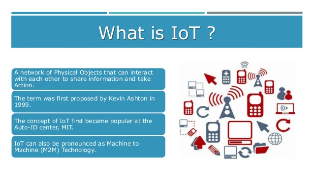
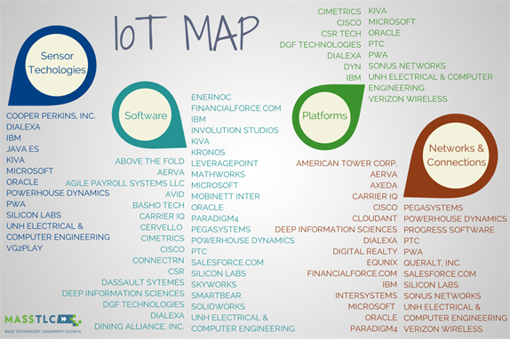
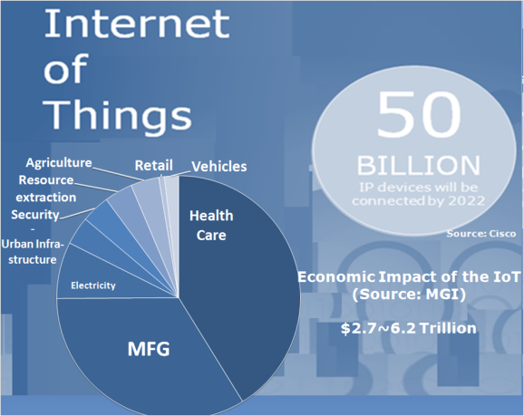

Futuro e presente na internet das coisas.
Palestrante: Rogério Fontes / @rogeriofontes
Sobre o palestrante:
Apaixonado em maneiras e formas ágeis de criar código fonte. Programando sempre tomando um bom café e escutando um belo e pesado rock`n roll. Trabalha a mais de 10 anos com java e linux, passando por android, python, php e agora com o coração no angular.js e node.js. Professor universitário de redes de computadores, Java, Análise de Sistemas e dispositivos móveis. Jugleader e co-fundador do uaijug (grupo de usuários do triângulo mineiro) e também co-fundador do triângulo hackerspace. Além disso aventurando como Empreendedor e trabalha como Arquiteto de software no comdominiodigital, projeto da digitos e Arquiteto Java da Algar Tech.

O que é internet das coisas?
A Internet das Coisas é o conceito em que todos os objetos cotidianos desde máquinas industriais, carros autonomos até dispositivos usáveis (wearables) possam usar sensores embutidos para coletar dados e agir sobre esses mesmo dados através de uma rede e/ou Internet. Portanto, é possível ajustar sua luz, fazer seu café, ligar e desligar reles ou ver temperaturas através de sensores. Ainda, podemos monitorar equipamentos de produção alertando o pessoal de manutenção para uma falha iminente. Simplificando, a Internet das Coisas é o futuro da tecnologia que pode tornar nossas vidas mais eficientes e conecetadas.
O que é internet das coisas?
Turbina conectada?
http://www.metratech.com/blog/industrial-machines-in-the-cloud/
Sensores
Podemos através de sensores, coletar uma grande quantidade de informações e aumentar nossa produtividade ou dimininuir o custos dos Sensores. Exemplo: Turbina da GE.
http://www.sas.com/pt_br/insights/big-data/internet-das-coisas.html
Historia da Internet das coisas
Nós estivemos facinados com a escalada de funções nos gadgets, durante decadas. Mas só foi nos últimos anos que vimos o verdadeiro potencial do IoT. O conceito evoluiu com a Internet sem fio quando essa se tornou mais usada, quando sensores ficaram mais sofisticados e incorporados a sistemas e ainda as pessoas começaram a entender que a tecnologia poderia ser uma ferramenta pessoal ou um bem profissional.
O termo: Internet das coisas
O termo "Internet das coisas" foi cunhado no final dos anos 90 pelo empreendedor Kevin Ashton. Ashton, que é um dos fundadores da Auto-ID Center no MIT. Ele foi parte de uma equipe que descobriu como vincular objetos à Internet através de uma tag RFID. Ele disse que usou pela primeira vez a frase "Internet das Coisas" em uma apresentação feita em 1999 e o termo tem sido usado desde então.
Tudo conectado

Pense nas possibilidades

Pense nas possivilidades - tesla
http://autovideos.com.br/incrivel-propaganda-carro-eletrico-tesla-narrada-nikola-tesla/
Pense nas possivilidades - Otto (Uber)
https://techcrunch.com/2016/10/25/ubers-otto-self-driving-truck-delivers-its-first-payload-50k-beers/
Ferramentas mais usadas
Por que Internet das coisas é importante?
Por que Internet das coisas é importante?
Porque podem melhorar nas soluções de transporte inteligentes que aceleram os fluxos de tráfego, reduzem o consumo de combustível, priorizam os horários de manuteção de veículos e podem salvar vidas.
Por que Internet das coisas é importante?
Com redes elétricas Inteligentes (Smart electric grid's), podemos ser mais eficientes em conectar recursos renováveis, melhorar a confiabilidade do sistema e cobrar os clientes com base em menores aumentos de uso.
Por que Internet das coisas é importante?
Com sensores de monitoramento em máquinas podemos diagnosticar - e prever - problemas pendentes de manutenção, a curto prazo, e até mesmo priorizar os horários da equipe de manutenção para o que o equipamento que precisa de reparação.
Por que Internet das coisas é importante?
Sistemas baseados em dados estão sendo construídos em toda a infra-estrutura de "cidades inteligentes", tornando mais fácil para os municípios executar a gestão de resíduos, aplicação da lei e outros programas de forma mais eficiente.
Falando em valores
Iot e BigData
"Para fazer a Internet das coisas útil, nós precisamos analizar as coisas. Isto significa uma nova gestão de dados e abordagens de integração e novos caminhos para analizar fluxos de dados continuamente."
Thomas H. Davenport
Presidente e Distinto Professor na Babson College
Co-foundador e diretor de pequisa no International Institute for Analytics
Autor do Competing on Analytics and Big Data at Work
Demo